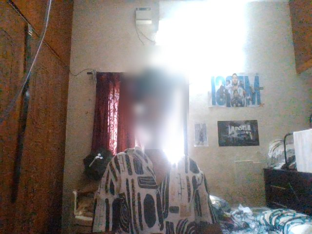
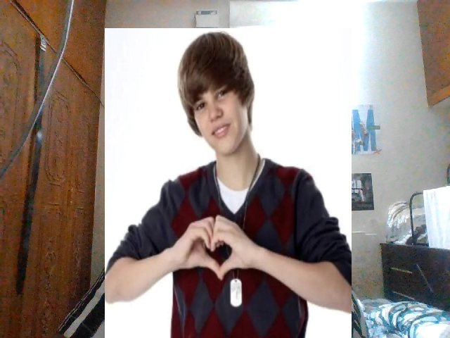
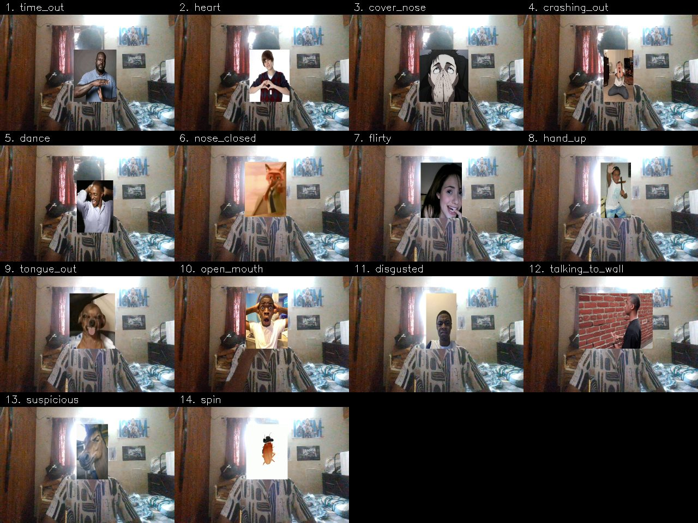
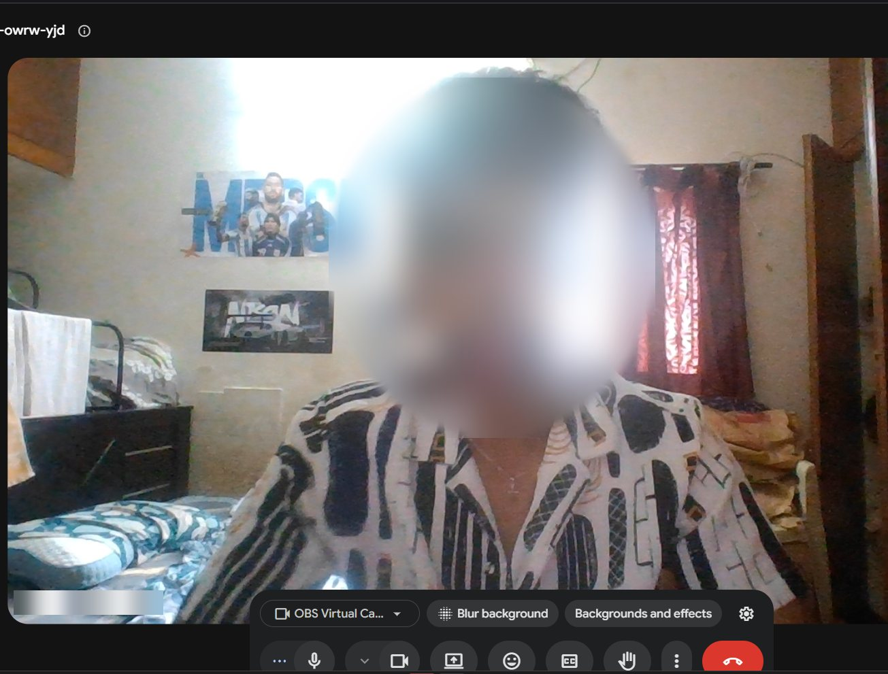
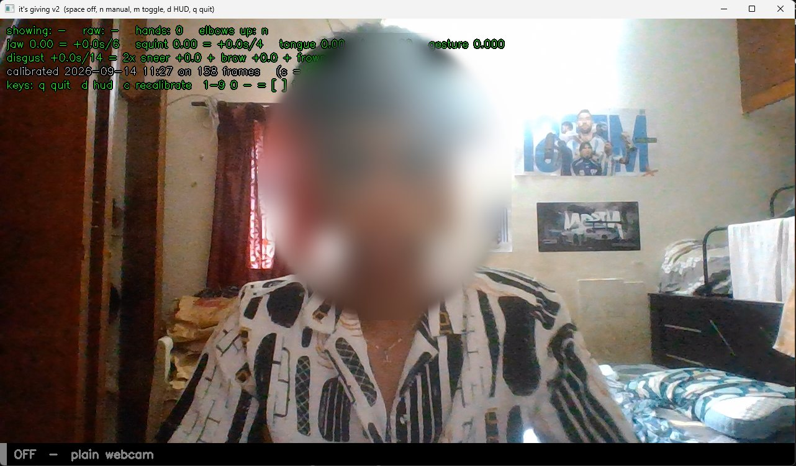

Before every Meet: three steps
Install once (below), then this is all it takes.
Double-click “Meme Cam”
The desktop shortcut to start.bat. It starts OFF, a plain webcam, with all hotkeys on.
Pick OBS Virtual Camera
In Meet, click the ^ next to the camera button and choose OBS Virtual Camera. Meet remembers it.
Minimize, don’t close
Keep both windows open. After the call, press q twice in the preview window.


Both frames were captured straight off OBS Virtual Camera during a real test on 14 September 2026.
Hotkeys that work inside the call
Keep your cursor in Meet. Nobody sees you switch windows, because you never do.
Plain webcam
The default. Detection isn’t even running, so no code path can draw a meme.
Memes on command
Your face, plus a meme only when you fire one. For calls where funny is a bonus.
Gesture mode
Memes fire from your gestures. Arm it with Ctrl+Alt+A and it switches itself off after a minute.
15 memes, and how to set them off
In gesture mode, hold the pose for a moment. Or skip the gesture and use the hotkey.

It really works in Google Meet
Real screenshots from the first test call. Faces and names are blurred.


Tested on a real laptop, tuned from real data
Windows 11, HP Wide Vision HD webcam, Python 3.12.10, mediapipe 0.10.21, OBS Studio 32.2.1, Google Meet in Brave. Measured 14 September 2026.
Frames per second Meet receives while armed
The virtual camera used to wait for all three models (hands 35 ms and body 43 ms per frame at 640×480). Detection now runs on a background thread. The line marks the webcam’s own 30 fps.
Nose pinch: detections that match the pose
One 90-second trace, replayed through the old and new limits. A real pinch measured thumb 0.41–0.43 face-widths from the nose; the old limit was 0.35.
Held gestures stolen by talking_to_wall
A hand held at the face jitters enough to read as waving. Waving now ignores hands at the face.
Also fixed: suspicious misfired 4, then 3 times per minute on glances at another window, and 0 times after the fix. Known gap: with both palms over the mouth, the hand model found two hands in 0 of 247 detections, so cover_nose works best with Ctrl+Alt+3.
Install once
Windows shown. macOS and Linux use ./setup.sh; everything else is the same.
1. Python 3.12 and OBS Studio
winget install --id Python.Python.3.12 --exact --scope user
winget install --id OBSProject.OBSStudio --exact2. The meme cam
git clone https://github.com/abishekashwinakash3-dotcom/itsgiving_-Updated_off-ON
cd itsgiving_-Updated_off-ON
powershell -ExecutionPolicy Bypass -File setup.ps13. Calibrate (7 seconds, facing the light)
venv\Scripts\python its_giving_v2.py --calibrate4. Desktop shortcut
Right-click start.bat → Send to → Desktop (create shortcut). Name it “Meme Cam”.
Something off?
venv\Scripts\python doctor.pyIt names what’s wrong and the command that fixes it.
When something goes wrong
Every one of these happened during testing. Full guide: MEET_SETUP.md.
| What you see | Why | Fix |
|---|---|---|
| “Another app is using the camera” | Meet is set to your real webcam, which the meme cam holds | ^ next to the camera button → OBS Virtual Camera |
| Meet video paused or black | The meme cam stopped | Double-click Meme Cam, then turn Meet’s camera off and on |
| Meme cam closes right after starting | The browser grabbed the real webcam first | Set Meet to OBS Virtual Camera, then start again |
| OBS Virtual Camera not in the list | Browser was open before OBS was installed | Reload the Meet tab (F5) |
| Hotkeys do nothing | Started without hotkeys | Use start.bat |
| Gestures rarely fire | Stranger’s calibration, or a backlit face | Recalibrate facing the light |
| Meme jumps onto someone else | Memes follow one face | Keep the frame to yourself |